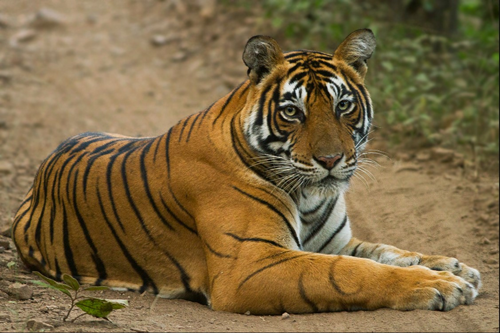

|
HOME | ABOUT RANTHAMBORE | SAFARI BOOKING | CONTACT US |
Ranthambore park hosts deciduous forests and wildlife like Bengal tiger , Indian leopard , Wild water ox , Gaur, nilgai, Barasingha, Black buck, Chinkara, Chousingha, wild boar, sambar, Indian muntjac, Indian hog deer, Spotted deer, Hyaena hyaena , Dhole, Indian wolf, Bengal fox, Rommel , Golden Jackal, Caracal, Felis chaus , Rusty spotted cat, Felis bengalensis , Asian palm cat , Indian grey mongoose, Ruddy Mongoose, Long-eared hedgehog , Northern palm squirrel, Indian Porcupine, Indian Hare, Lesser mole rat , ratel , Indian fruit bat , Greater false vampire bat bat, Indian gerbil, Indian pangolin, Melursus ursinus , southern plains gray langur, rhesus macaque, mugger crocodile. The sanctuary is home to a good sort of trees, plants, birds and reptiles, also together of the most important banyan trees in India.
It is 6-seater Jeep vehicle which is all sides open for the best experience. 48 Jeeps are allowed in each shift. Jeep is considered to be one of the best options for wildlife photography and for those who are likely to have their family to maintain privacy. Remember both canter and jeep have same route. Though, Canter and Jeep both are reachable to deep forest and even the narrow places. Jeep safari is usually preferable for those who are willing to explore the jungle with their loved ones. Spotting tigers in both jeep and canter is feasible and can easily stream the wild animals without making much noise which increases the chance to spot the tiger as well as provide you the closer view of the wildlife. Also, the few seats means you can book all the seats in a Jeep for you and your friends or family, and stream the wildlife as per your likings within the allotted zone and time slot. The Jeep safari is organized in two shifts in a day.
It is 20-seater Canter vehicle. It is mini bus type with open top like being on a bus without a top. 50 Canter are allowed in each shift. There are number wise seats in canter like 2 seats in left side and 2 in right side. Travelers can easily spot tigers in Jeep and canter without making much noise it increases the chance of spotting tiger. Everyone can easily see a tiger from every seats of canter when there is sighting of a tiger. It is open top vehicles, so be sure to take a hat and some water with you. Remember both canter and Jeep have same route in forest. So, there is only difference of costing and capacity. It is preferable for more than 6 travelers but everyone can book, and stream the wildlife within the allotted zone and time slot. The Canter safari is organized in two shifts in a day.